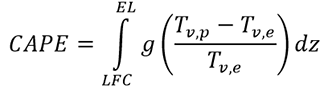
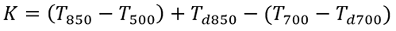
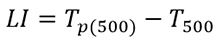
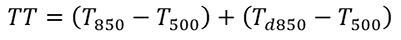
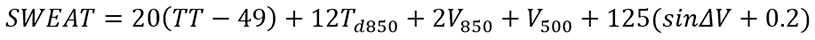
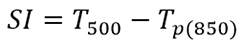
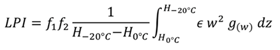
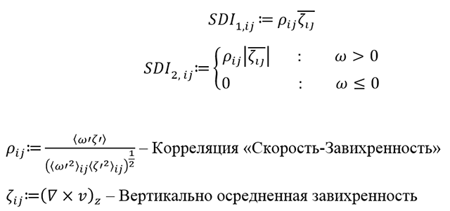
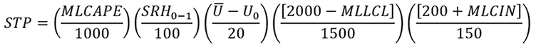
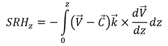

Параметры для оценки рисков опасных явлений, связанных с развитием конвекции
Конвективная доступная потенциальная энергия (Convective Available Potential Energy, CAPE)
Показатель неустойчивости атмосферы. Численно равен количеству энергии частицы (массы) воздуха (Дж/кг), при ее вертикальном перемещении в атмосфере от уровня свободной конвекции до уровня нейтральной плавучести. Используется для качественной оценки конвекции и неблагоприятных явлений, связанных с ней.
EL – Уровень нейтральной плавучести
LFC – Уровень свободной конвекции
g – Ускорение свободного падения
Tv,p – Виртуальная температура частицы
Tv,e – Виртуальная температура окружающей массы воздуха
Опасные явления (ОЯ) погоды чаще всего наблюдаются при значениях CAPE выше 1000, однако не существует достоверно откалиброванных пороговых значений. CAPE зачастую используется как один из компонентов для диагностики отдельных типов опасных конвективных явлений (см. STP, SCP).
Есть разные способы определения начальной точки, от которой будет подниматься частица:
- Surface-based CAPE (SBCAPE) – оценивается энергия частицы, поднимающейся с поверхности Земли.
- Mixed Layer CAPE (MLCAPE) – оценивается энергия нижнего (100мб) перемешенного слоя атмосферы.
- Most Unstable CAPE (MUCAPE) – оценивается энергия самой неустойчивой частицы (объема).
И в зависимости от этого получаются разные значения CAPE. НА картах COSMO-Ru выдается значение MLCAPE.
K-index
Оценивает потенциал к развитию конвекции и гроз.
T – Температура воздуха
Td – Температура точки росы
Численная индексация T и Td – изобарические поверхности в гПа.
| Значение K | Интерпретация |
| <20 | Вероятность гроз стремится к нулю |
| 20-30 | Вероятность формирования изолированных грозовых очагов |
| >35 | Высокая вероятность формирования многочисленных грозовых очагов |
Источник: NWS NOAA
Lifted Index (Li)
Показатель устойчивости атмосферы. Характеризуется разностью температуры окружающего воздуха и температуры частицы, поднятой адиабатически до заданного уровня по вертикали (в практике – до уровня 500 гПа).
| Значение LI | Интерпретация |
| ≥6 | Атмосфера устойчива, конвекция невозможна |
| 0 | Атмосфера слабонеустойчива, возможна конвекция |
| ≤-6 | Атмосфера крайне неустойчива, возможно развитие интенсивной конвекции и опасных явлений погоды |
Источник: NWS NOAA
Total Totals Intex (TT)
| Значение TT | Интерпретация |
| <45 | Атмосфера устойчива, развитие конвекции маловероятно |
| 45-50 | Вероятно развитие грозовых очагов |
| 50-55 | Вероятно развитие опасных конвективных явлений |
| 55-60 | Высокая вероятность опасных конвективных явлений |
Источник: NWS NOAA
Severe Weather Threat Index (SWEAT)
Оценивает риск возникновения опасных конвективных явлений.
V – скорость ветра в узлах. Численная индексация – изобарические поверхности в гПа.
ΔV – разность направлений ветра на уровнях 500 и 850 гПа в градусах.
| Значение SWEAT | Интерпретация |
| 150-300 | Вероятно возникновение конвекции и неблагоприятных явлений |
| 300-400 | Вероятно возникновение опасных конвективных явлений |
| >400 | Вероятно формирование смерчей |
Источник: NWS NOAA
Showalter Index (SI, SWI)
Показатель неустойчивости атмосферы
Tp(850) – температура частицы воздуха, поднятой адиабатически с уровня 850 гПа до уровня 500 гПа.
| Значение SI | Интерпретация |
| >0 | Атмосфера устойчива |
| 0 – (-4) | Атмосфера слабонеустойчива |
| (-4) – (-7) | Атмосфера сильнонеустойчива |
| <-8 | Атмосфера экстремально неустойчива |
Источник: NWS NOAA
Радиолокационная отражаемость
Радиолокационная отражаемость показывает отношение отправленного сигнала к пришедшему и измеряется в децибеллах. Эта величина сильно зависит от содержания гидрометеоров в атмосфере – чем больше и плотнее гидрометеоры, тем выше значение. На основе этой характеристики ЦАО рассчитывает вторичные продукты – облачность, осадки, ливни, грозы, град, шквалы.
Поскольку в модели рассчитывается количество и состояние гидрометеоров, это позволяет получить поле прогностической отражаемости. Модельная радиолокационная отражаемость показывает, какую картину (по версии модели) наблюдал бы пользователь радиолокатора в прогностический срок. Такое поле позволяет анализировать процессы с наличием гидрометеоров. Значения отражаемости выше 50 дБ указывают на потенциал к формированию опасных явлений (грозы, град, шквалы). Наличие такого поля дает возможность проводить верификацию с радарными данными.
В конфигурации COSMO с шагом 2,2 км (и менее) конвекция считается явно, а в микрофизике появляется дополнительный гидрометеор – снежная крупа. В 6 км конфигурации глубокая конвекция параметризуется, потому значения отражаемости для опасных явлений будут занижены в этой версии.
На прогностических картах предоставляется максимальное значение столбе атмосферы за 1 час. Это позволяет не пропустить опасные явления между сроками.
Lightning Potential Index (LPI)
Индекс потенциала молний. Рассчитывается при помощи явно воспроизведенных моделью конвективных облаков, следовательно, применим для доменов COSMO-Ru с шагом сетки не более 2.2 км.
Индекс пропорционален частоте разрядов молний (flash rate), однако, в настоящий момент перевод в эту величину затруднителен.
f1, f2, g(w) – вспомогательные коэффициенты
ε – функция, описывающая присутствие в облаке частиц воды твёрдой и жидкой фазы
w – вертикальная скорость ветра
Дробный член описывает зону электрификации между изотермами 0 °C и -20 °C.
Источник: [Yair et. al, 2010]
Диаметр града (HailCast)
Применяется одномерная модель HailCast, адаптированная для COSMO из модели WRF. В качестве продукта можно оценить максимальный диаметр града (в мм) в узле сетки модели. Методика основана на явном моделировании конвективной облачности и применима для доменов модели COSMO-Ru с шагом сетки не более 2.2 км.
Supercell Detection Index (SDI)
Индекс обнаружения суперячеек. В отличие от многих конвективных параметров (в частности SCP), данный индекс основан на явном воспроизведении моделью восходящих потоков конвективных ячеек. Следовательно, может применяться для доменов модели COSMO-Ru с шагом не более 2.2 км.
| |SDI| = 0.0003 1/с | Минимальный порог для суперячеек |
| |SDI| > 0.003 1/с | Значительный сигнал для суперячеек |
Этот индекс «помечает» в прогностических полях те восходящие потоки, в которых присутствует вращение. Применим этот метод не только для суперячеек, но и для зон вращения в квазилинейных мезомасштабных конвективных системах.
В COSMO рассчитываются две вариации индекса – SDI1 и SDI2. В первом случае знак указывает на направление движения по вертикали. Положительные значения соответствуют завихренным восходящим потокам, отрицательные – завихренным нисходящим. В версии SDI2 рассматриваются только восходящие потоки, а знак указывает на направление вращения. Положительные значения соответствуют мезоциклонам, вращающимся против часовой стрелки, отрицательные – по часовой. Для использования в оперативной практике рекомендуется индекс SDI2.
Особенное внимание следует уделить ситуациям, когда индекс превышает «значительный сигнал» в областях с повышенными значениями параметра STP.
[Wicker et. al, 2015]
Significant Tornado Parameter (STP)
Комплексный показатель риска формирования значительных смерчей.
MLLCL – Средний уровень конденсации
Под значительными (Significant) подразумеваются смерчи, имеющие категорию EF-2 и выше по шкале Фудзиты. Для оценки риска слабых смерчей данный параметр не применяется.
Вероятность формирования значительных смерчей существует при значениях STP более 1. Чем больше индекс - тем выше вероятность формирования и возможная интенсивность смерчей.
В данный момент этот параметр показывает большой процент ложных тревог. Рекомендуется использовать в комплексе с индексом SDI2.
[Thompson et. al, 2004]
Относительная спиральность (Storm-Relative Helicity, SRH)
Показатель отношения направления движения конвективной ячейки к оси горизонтальной завихренности, сгенерированной вертикальным сдвигом ветра.
Высокие значения относительной спиральности (выше 100 м2/c2) в слое 0-3 км характеризуют благоприятные условия для формирования вращения в мезомасштабных конвективных системах, а в слое 0-1 км – для формирования и эволюции смерчей [Thompson, 2004].
V – вектор скорости ветра
C – вектор скорости движения конвективной ячейки
k – единичный вектор